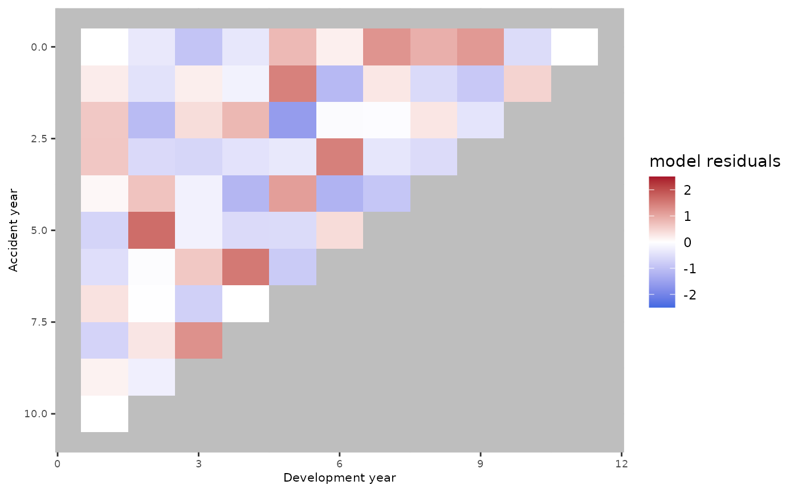

Fits one of the package's age, age-cohort, age-period, or age-period-cohort claim-development models to data prepared by [AggregateDataPP()]. Estimation is performed by [StMoMo::fit.StMoMo()].
Usage
clmplus(
AggregateDataPP,
hazard.model = NULL,
link = c("log", "logit"),
staticAgeFun = TRUE,
periodAgeFun = "NP",
cohortAgeFun = NULL,
effect_log_scale = TRUE,
verbose = FALSE,
constFun = function(ax, bx, kt, b0x, gc, wxt, ages) {
list(ax = ax, bx = bx, kt =
kt, b0x = b0x, gc = gc)
},
...
)
# Default S3 method
clmplus(
AggregateDataPP,
hazard.model = NULL,
link = c("log", "logit"),
staticAgeFun = TRUE,
periodAgeFun = "NP",
cohortAgeFun = NULL,
effect_log_scale = TRUE,
verbose = FALSE,
constFun = function(ax, bx, kt, b0x, gc, wxt, ages) {
list(ax = ax, bx = bx, kt =
kt, b0x = b0x, gc = gc)
},
...
)
# S3 method for class 'AggregateDataPP'
clmplus(
AggregateDataPP,
hazard.model = NULL,
link = c("log", "logit"),
staticAgeFun = TRUE,
periodAgeFun = "NP",
cohortAgeFun = NULL,
effect_log_scale = TRUE,
verbose = FALSE,
constFun = function(ax, bx, kt, b0x, gc, wxt, ages) {
list(ax = ax, bx = bx, kt =
kt, b0x = b0x, gc = gc)
},
...
)Arguments
- AggregateDataPP
An object created by [AggregateDataPP()]. It contains a square cumulative paid-claims triangle and the corresponding development-calendar occurrence, exposure, and weight matrices.
- hazard.model
A required character scalar selecting `"a"` (age only, equivalent to chain ladder), `"ac"` (age-cohort), `"ap"` (age-period), or `"apc"` (age-period-cohort).
- link, staticAgeFun, periodAgeFun, cohortAgeFun, constFun
Compatibility arguments retained from the original interface. The package's four built-in model definitions determine these settings, so these arguments are currently ignored.
- effect_log_scale
A logical scalar. If `TRUE` (the default), fitted effects are returned on the linear-predictor/log scale; if `FALSE`, they are exponentiated.
- verbose
A logical scalar passed to [StMoMo::fit.StMoMo()]. The default `FALSE` hides StMoMo fitting progress. `TRUE` displays progress, including zero-weighted ages, years, and cohorts and the start/finish of the gnm fit.
- ...
Reserved for future extensions; no arguments are currently forwarded.
Value
A `clmplusmodel` list with:
- model.fit
The underlying `fitStMoMo` object. Its fitted `ax`, `kt`, and `gc` fields contain the selected age, period, and cohort effects; inapplicable effects are `NULL`. Other fields are supplied by StMoMo and should be treated as implementation details.
- apc_input
A list containing `J` (triangle dimension), `eta` (within-cell exposure timing), `hazard.model`, `diagonal` (latest observed cumulative payments by calendar representation), and the original `cumulative.payments.triangle`.
- hazard_scaled_deviance_residuals
A `J` by `J` numeric matrix in accident-year by development-year triangle orientation. Unobserved cells are `NA`.
- fitted_development_factors
A `J` by `J` numeric matrix of fitted multiplicative cumulative development factors; unavailable cells are `NA`.
- fitted_effects
A list with `fitted_development_effect`, `fitted_calendar_effect`, and `fitted_accident_effect`. Components not included in the selected model are `NULL`.
The default method always raises an informative error because `AggregateDataPP` does not inherit from `"AggregateDataPP"`.
Details
Incremental payment amounts can be non-integer even though the StMoMo fit uses a Poisson quasi-likelihood. Warnings whose messages begin exactly with `non-integer x =` are therefore expected and are selectively muffled. All other warnings, including convergence and numerical warnings, remain visible.
See also
[AggregateDataPP()], [predict.clmplusmodel()], [predictReserve.clmplusmodel()], [plot.clmplusmodel()]
Examples
data(sifa.mtpl)
prepared <- AggregateDataPP(sifa.mtpl)
age_fit <- clmplus(prepared, hazard.model = "a", verbose = FALSE)
age_fit$fitted_effects
#> $fitted_development_effect
#> 0 1 2 3 4 5 6
#> NA -0.3941653 -1.7576623 -2.7225557 -3.4273738 -3.8019315 -4.2345595
#> 7 8 9 10 11
#> -4.4846324 -4.7442044 -5.0214737 -5.5021373 -4.7661088
#>
#> $fitted_calendar_effect
#> NULL
#>
#> $fitted_accident_effect
#> NULL
#>
# \donttest{
apc_fit <- clmplus(prepared, hazard.model = "apc", verbose = FALSE)
plot(apc_fit)

# }